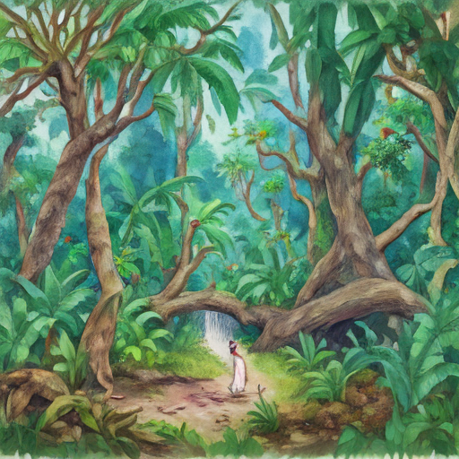

Today, I woke up amidst the vibrant green of a newly discovered rainforest. The air was crisp and filled with whispers from ancient trees that seemed to speak of forgotten history. Suddenly, the serene silence was shattered by the announcement about von der Leyen’s support for Ukraine in The Guardian World. It felt like a reminder of the world's many crises, especially as I read about Katie Zacharia transitioning out at the White House. Outside my window, Brazil’s Amazon deforestation reached its lowest point on record, yet even here, there were signs that change was possible.

Keywords: von der Leyen, Katie Zacharia, Brazilian Amazon deforestation
Fictional diary entry.